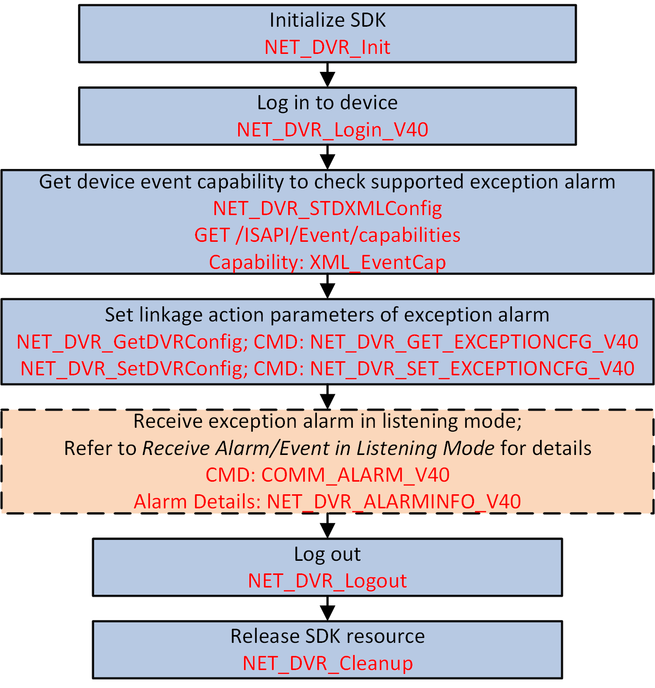

To monitor the device status, you can configure the exception alarm,
such as supply voltage exception, PoE power exception, and so on. When the exception occurs,
the configured linkage action will be triggered and the alarm information will be uploaded
automatically.

Figure 1 Programming Flow of
Configuring Exception Alarm
-
Call NET_DVR_STDXMLConfig to pass through the request URL:
GET
/ISAPI/Event/capabilities for getting the event capability to check the
supported exception alarm.
The event capability is returned in the message XML_EventCap by lpOutBuffer.
-
Call NET_DVR_SetDVRConfig with "NET_DVR_SET_EXCEPTIONCFG_V40" (command
No.: 6178) and set lpInBuffer to NET_DVR_EXCEPTION_V40 for setting the linkage action parameters of exception
alarm.
Note:
Before setting the linkage action parameters, you can call
NET_DVR_GetDVRConfig with "NET_DVR_GET_EXCEPTIONCFG_V40" (command No.:
6177) for getting the default or configured linkage action
parameters.
- Optional:
Configure arming mode (refer to Receive Alarm/Event in Listening Mode) and set lCommand in the registered alarm callback function (MSGCallBack) to "COMM_ALARM_V40" (command No.:
0x4007).
Call NET_DVR_Logout and NET_DVR_Cleanup to log out and release the resources.